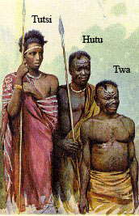

The problems in the third world are at their heart political, and have deep historical roots.
Governments that are corrupt, ineffective, totalitarian, or some combination of the three,
ignore their responsibilities and only use their power to enrich selfish oligarchs.
 Infrastructure is ignored, unhealthy or unproductive societal norms are enforced or allowed, and the citizenry is abused and neglected.
All these things create an environment that stifles social, technological, political,
and economic progress, and prevents the society from achieving stability and self-reliance.
Infrastructure is ignored, unhealthy or unproductive societal norms are enforced or allowed, and the citizenry is abused and neglected.
All these things create an environment that stifles social, technological, political,
and economic progress, and prevents the society from achieving stability and self-reliance.
These problems are consequences of colonial European imperialism, which created divisions in colonized societies that continued imperial control. Many nations have thrown off these political structures or resolved these social stigmas, but the turbulence of world wars, the cold war, and modern economic imperialism have maintained the unstable environment and kept these populations from gaining footholds toward industrialization and safety. The problems are ones they have inherited from history, not created themselves.  It is true that in order to truly make these problems disappear, the people themselves must destroy them, and cannot rely on other nations to hold their hands, but it is extremely unfair to ignore them to face these problems on their own. We must do what we can to help them help themselves, so they can join us as prosperous, happy, contributing citizens of the world.